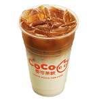
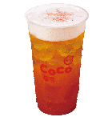
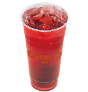
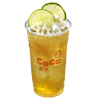
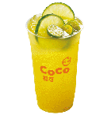
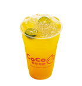
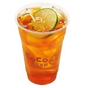
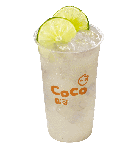

產品介紹

紅茶拿鐵
嚴選最優質錫蘭紅茶，加入高優質鮮純牛乳，帶您體驗濃醇的高尚品味。
| 87kcal | 50元 |

玫瑰鹽奶蓋紅茶
精選來自喜馬拉雅山山脈的純淨岩鹽，玫瑰色的結晶岩鹽，結合香醇濃厚的乳霜與紅茶，多層次的口感，融合出絕妙風味。
| 40kcal | 35元 |

洛神紅了
微香。微酸。微甜 春夏暢飲必選擇 CoCo都可嚴選推薦 每口喝下都讓您心曠神怡、暑氣全消⋯⋯ 洛神紅了~心花開了
| 87kcal | 50元 |
鮮檸檬紅茶
頂級紅茶，搭配新鮮檸檬原汁，酸甜對話，滋潤心窩！
| 56kcal | 30元 |

鮮檸檬綠茶
頂級綠茶，搭配新鮮檸檬原汁，酸甜對話，滋潤心窩！
| 20kcal | 40元 |

金桔檸檬
台灣本土金桔，含豐富維他命A、C，對人體具有抗老化功效，搭配新鮮現榨檸檬原汁，CoCo讓您每日都健康。
| 30kcal | 45元 |

芒果金桔西谷米
熱情金黃的鮮芒果香在淡雅的茉莉綠茶中完美釋放！香甜華麗卻又優雅芬芳，為您美好的夏日時光增添更多的幸福感。
| 45kcal | 50元 |

南非國寶檸檬茶
不含咖啡因的國寶茶搭配新鮮檸檬汁，舒緩一天的壓力。
| 22kcal | 35元 |

鮮檸檬汁
新鮮的檸檬汁不但增進健康，檸檬所特有的清新迷人芬芳洋溢齒間，令人久久難忘。
| 20kcal | 25元 |
招牌咖啡
完美配方完全釋放每顆咖啡豆的香醇滋味，讓您口中每個味蕾都能感受到獨特風味，欲罷不能。
| 68kcal | 55元 |